Electrophysiology¶
ECG¶
- Based on ECG Made Easy, Teaching by Dr Chin Chee Yang
- In SGH every patient presenting with chest pain need to have a ECG within 10 minutes.
- Once a ECG is done, it will be shown to a senior doctor in the department
- ECG is a graphic representation of the electrical activity of the heart
- Standard 12-lead ECG has 6 limb leads and 6 pre-cordial leads
- Additional leads
- Right-sided ECG
- Posterior ECG - extend to the back of the chest
- One rib space up - look for Brugada
How to put on ECG¶

- Clean skin with alcohol; then wipe off the alcohol
- Rub skin with a paper towel to introduce mild abrasion
- Identify the second rib interspace by feeling for the sternal angle – this is the point where the manubrium and the body of the sternum meet, and there is usually a palpable ridge where the body of the sternum begins, angling downwards in comparison to the manubrium. The second rib is attached to the sternum at the angle, and the second rib space is just below this. Having identified the second space, feel downwards for the third and then the fourth rib spaces, over which the electrodes for V1 and V2 are attached, to the right and left of the sternum, respectively
- The other electrodes are then placed as shown in Figure with V4 in the midclavicular line of the 5th intercostal space (the imaginary vertical line starting from the midpoint of the clavicle); V5 in the anterior axillary line (the line starting from the fold of skin that marks the front of the armpit); and V6 in the midaxillary line.
- Get the patient comfortable and relaxed
How ECG Works¶
- The ECG results from electrical changes associated with activation (depolarization) first of the atria and then of the ventricles.
- When the depolarization wave spreads towards a lead, the deflection is predominantly upward. When the wave spreads away from a lead, the deflection is predominantly downward.
- The septum is normally depolarized from the left side to the right.
- In a normal heart the left ventricle exerts more influence on the ECG than the right ventricle.
- The first downward wave is called a Q, the first upward wave is called an R

How to Read ECG¶
Impulse travelling towards the lead gives a positive deflection, impulse travelling away from the lead gives a negative deflection.
-
Initial Preparation
-
Check patient name
-
Check the calibration signal: 1 mV of signal causes a deflection of 1 cm on the ECG paper
-
Check the paper speed: 25 mm/s → Small square is 40 ms, and large square is 200 ms
-
Determine the rate and rhythm:
-
The rhythm of the heart is best interpreted from whichever ECG lead shows the P wave most clearly. This is usually, but not always, lead II or lead V1.
-
Estimate rate: 300/RR interval if rhythm is regular.
-
Is the rhythm regular or irregular?
- If irregular
- Is there extrasystoles or escape beats?
- Extrasystoles arrive early, escape beats arrive late.
- Does the next P wave after the extrasystole appear at an expected time? The next P wave in supraventricular extrasystole usually comes late due to effect on SA node periodicity.
- If regular
- Is there P wave and QRS? i.e. look for fibrillation
- Is there one p wave for every QRS complex?
- Yes: Atrial / sinus rhythm → differentiate using P wave morphology
- No: junctional or ventricular rhythm → differentiate using QRS and T
- Is the QRS <120 ms (3 small squares)
- Is the QRS complex the same shape throughout (i.e. has it the same initial direction of deflection as the normal beat, and has it the same duration)? Supraventricular beats look the same as each other; ventricular beats may look differe dnt from each other.
- Is the T wave the same way up as in the normal beat? In supraventricular beats, it is the same way up; in ventricular beats, it is inverted.

-
Check the Cardiac Axis using leads I and II
-
Look at I and II, both should be positive
-
If I negative, right axis deviation (I and II point towards): right ventricular hypertrophy e.g. PE
-
If I positive and II negative, left axis deviation (I and II point away): left ventricular hypertrophy e.g. conduction defect

-
Look at the critical intervals
-
What is the duration of the PR interval ( normal is 140 - 220 ms or 3.5 - 5.5 small squares);
-
QT interval <450 ms (11 small squares) in male and <470 ms in female
- Another quick way to look at this is to compare QT with RR; if QT is > ½ RR it is prolonged
- May need to correct QT interval for heart rate.
-
Look closely at the P-wave
-
Does the P wave look normal? It can be normal, unusually tall, unusually broad to have multiple morphologies
-
Look closely at the QRS complex
-
Is it of normal duration? Does its morphology look normal?
-
The QRD complex can only have three abnormalities - it can be too broad, too tall, or may contain an abnormal Q wave.
-
Appearance of ST segment
-
Is the ST segment raised or depressed?
-
Look closely at the T waves
-
Make sure it is upward (or down in the case of aVR)
- draw a line from the tip to the base to see which side is steeper
- Steep drop-off is more likely to be an acute MI
Summary template
" The patient is having a XXX rhythm, at X /min) , with normal cardiac axis, "
Rhythms¶
-
Key to rhythm abnormalities are
-
P - wave - can I find them? Look for the lead in which they are most obvious
- The relationship between P wave and QRS complexes
- The width of the QRS complexes
-
Because an arrhythmia should be identified from the lead in which P waves can be seen most easily, full 12 lead ECGs are better than rhythm strips
-
There are multiple ways to classify cardiac rhythms
-
By location of origin
- Sinus Rhythms
- Atrial Rhythms: Abnormal rhythms starting in the atrial muscle
- Junctional Rhythms: Abnormal rhythms starting at the region around the atrioventricular node
- Ventricular Rhythms: Abnormal rhythms starting in the ventricular muscle
-
By the node
- Supraventricular rhythms
- Sinus rhythm, atrial rhythm and junctional rhythm together constitute the ‘supraventricular’ rhythms
- the depolarization wave spreads to the ventricles in the normal way via the His bundle and its branches
- The QRS complex is therefore normal, and is the same whether depolarization was initiated by the SA node, the atrial muscle, or the junctional region.
- The only exception to this rule occurs when there is a supraventricular rhythm with right or left bundle branch block, or the Wolff–Parkinson–White (WPW) syndrome, when the QRS complex will be wide
- Ventricular rhythms
- the depolarization wave spreads through the ventricles by an abnormal and slower pathway, via the Purkinje fibres
- The QRS complex is therefore wide and is abnormally shaped.
- Repolarization is also abnormal, so the T wave is also of abnormal shape.
-
By the rate and number of beats
- bradycardias – slow and sustained
- tachycardias – fast and sustained
- extrasystoles – occur as early single beats
- fibrillation – activation of the atria or ventricles is totally disorganized.
This is the most useful way to organise the rhythms management wise.
-
Changes in heart rate associated with respiration are normally seen in young people. This is because the rate of discharge of the SA node is influenced by the vagus nerves, and also by reflexes originating in the lungs.
Bradycardias
- Escape rhythms are not primary disorders, but are the response to problems higher in the conducting pathway. They are commonly seen in the acute phase of a heart attack, when they may be associated with sinus bradycardia. It is important not to try to suppress an escape rhythm, because without it the heart might stop altogether.
- Patients with any bradycardia that is affecting the circulation can be treated with atropine, but if this is ineffective they will need temporary or permanent pacing
- Various heart blocks result in bradycardia, see earlier section on Conduction patterns
| Arrhythmia | ECG Features | Remarks |
|---|---|---|
| Sinus bradycardia | Long RR interval but otherwise normal ECG | Associated with athletic training, fainting attacks, hypothermia or myxoedema, and is also often seen immediately after a heart attack. |
| Atrial escape | Occasional abnormal P wave is followed by a normal QRS complex; Remaining beats show a return to sinus arrhythmia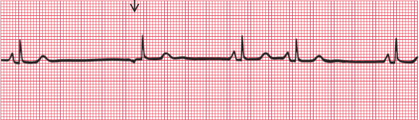 | If the rate of depolarization of the SA node slows down and a different focus in the atrium takes over control of the heart, the rhythm is described as ‘atrial escape’ |
| Junctional escape | No P waves in junctional beats (indicates either no atrial contraction or P wave lost in QRS complex); Normal QRS complex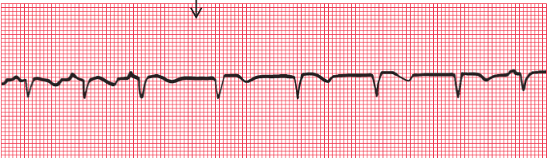 | Region around the AV node takes over as the focus of depolarization. |
| Ventricular escape | Transient abnormal QRS complexes; when no relationship between P waves and wide QRS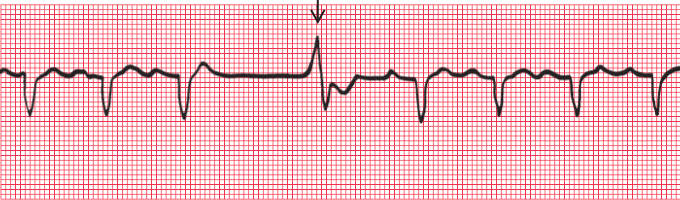 | Ventricular escape rhythms can occur without complete heart block, and ventricular escape beats can be single |
Tachycardias
- The first treatment for any abnormal tachycardia is carotid sinus pressure.
- Narrow complex tachycardias should be treated initially with adenosine.
- Wide complex tachycardias should be treated initially with lidocaine.
- In patients with acute heart failure or low blood pressure due to tachycardia, DC cardioversion should be considered early on.
| Arrhythmia | ECG Features | Remarks |
|---|---|---|
| sinus tachycardia | Normal P waves, which may superimpose on T waves of preceding beat | Associated with exercise, fear, pain, haemorrhage or thyrotoxicosis. |
| Atrial tachycardia | abnormal P waves may superimpose on the T waves of the preceding beats (M shaped T)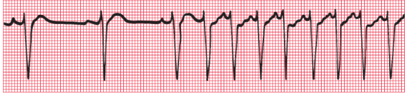 | Supra ventricular tachycardia with atrial depolarising faster than 150/min; The AV node cannot conduct atrial rates of discharge greater than about 200/min. If the atrial rate is faster than this, ‘atrioventricular block’ occurs, with some P waves not followed by QRS complexes, but not due to conduction problem as in heart block. |
| Atrial Flutter | no flat baseline between the P waves; 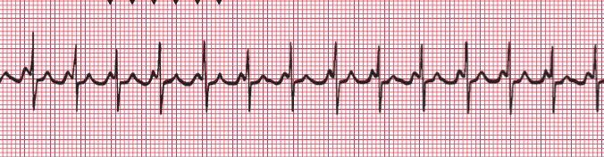 | Supraventricular tachycardia with atrial depolarising faster than 250/min; A narrow complex tachycardia with a ventricular rate of about 125–150/min should always alert you to the possibility of atrial flutter with 2:1 block - look carefully to identify extra P wave, these can be differentiated from T waves of the preceding QRS by regularity. Carotid sinus pressure can increase the block between atria and the ventricles, to make atrial flutter appear more obvious. |
| Junctional Tachycardia | P waves may be seen very close to the QRS complexes, or may not be seen at all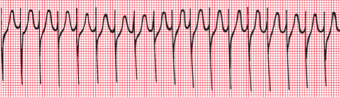 | |
| Ventricular Tachycardia | QRS complex is wide and abnormal.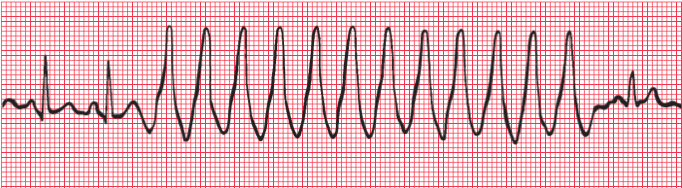 | Carotid sinus pressure has no effect since it acts of the AV node and the source of VT is below the AV node. |
| Accelerated idioventricular rhythm | Transient rhythm with no p-wave and wide QRS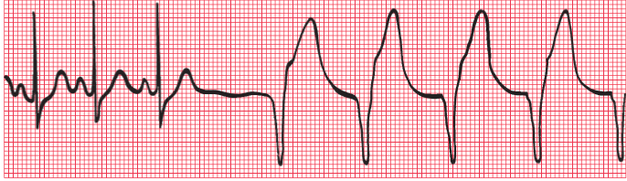 | The rhythm of the heart controlled by a ventricular focus with an intrinsic frequency of discharge faster than that seen in complete heart block. Often associated with AMI. Although appears similar to ventricular tachycardia, it should NOT be treated. VT should not be treated unless it is faster than 120/min |
Extrasystoles
- extrasystole comes early and an escape beat comes late.
- These rarely need treatment
- They have to be transient
- In both supraventricular and ventricular extrasystoles there is a (‘compensatory’) pause before the next heartbeat, but a supraventricular extrasystole usually upsets the normal periodicity of the SA node, so that the next SA node discharge (and P wave) comes late.
| Arrhythmia | ECG Features | Remarks |
|---|---|---|
| Atrial extrasystole | Abnormally shaped P wave; normal QRS complex; P wave after missed P wave appears late | |
| Junctional extrasystole | No P wave or P wave appears immediately before or after the QRS complex; normal QRS; P wave after missed P wave appears late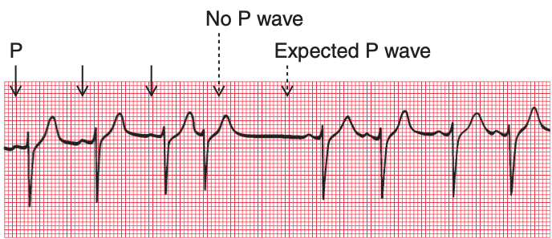 | |
| Ventricular extrasystole | Early beat with wide QRS complex and abnormal T wave; 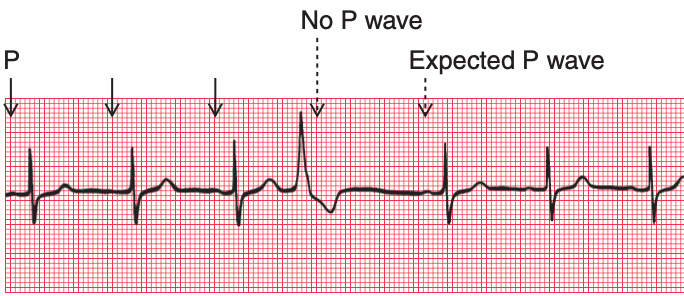 may also have 'R on T' phenomenon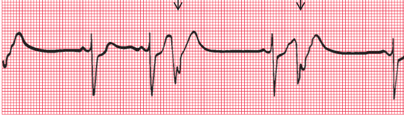 |
Ventricular extrasystoles are common, and are usually of no importance. However, when they occur early in the T wave of a preceding beat they can induce ventricular fibrillation, and are thus potentially dangerous. |
Fibrillations
| Arrhythmia | ECG Features | Remarks |
|---|---|---|
| Atrial fibrillation | No P waves, and an irregular baseline; Normally shaped QRS complexes; Irregular rhythm | When the atrial muscle fibres contract independently there are no P waves on the ECG, only an irregular line. The AV node is continuously bombarded with depolarization waves of varying strength, and depolarization spreads at irregular intervals down the His bundle. |
| Ventricular Fibrillation | no QRS complex can be identified, and the ECG is totally disorganized | When the ventricular muscle fibres contract independently, |
Wolff-Parkinson-White Syndrome
- Accessory bundles form a direct connection between the atrium and the ventricle, usually on the left side of the heart, and in these bundles there is no AV node to delay conduction. A depolarization wave therefore reaches the ventricle early, and ‘pre-excitation’ occurs. The PR interval is short, and the QRS complex shows an early slurred upstroke called a ‘delta wave’.
- The second part of the QRS complex is normal, as conduction through the His bundle catches up with the pre-excitation.
- It can cause paroxysmal tachycardia: Depolarization can spread down the His bundle and back up the accessory pathway, and so reactivate the atrium before the SA nodes does. A ‘re-entry’ circuit is thus set up, and a sustained tachycardia occurs.
Conduction Patterns¶
-
Think of conduction problems in the order in which the depolarization wave normally spreads: SA node → AV node → His bundle → bundle branches. So when we think about conduction problems, we think in three levels
-
Heart block
- Bundle branch block
-
Fascicle or anterior division block
-
There are three main types of heart blocks:
-
PR interval prolonged but beats are not dropped = 1st degree heart block
- Often seen in normal people.
- Think about acute myocardial infarction and acute rheumatic fever as possible causes.
- No specific action needed.
-
Excitation intermittently fails to pass through the AV node or the bundle of His = 2nd degree heart block. There are three variants of second degree heart block
Variant Feature ‘Wenckebach’ or ‘Mobitz type 1’ Progressive lengthening of the PR interval and then failure of conduction of an atrial beat, followed by a conducted beat with a shorter PR interval and then a repetition of this cycle. Usually benign. ‘Mobitz type 2’ Most beats are conducted with a constant PR interval, but occasionally there is atrial depolarization without a subsequent ventricular depolarization. May herald ‘complete,’ or ‘third degree’, heart block. ‘2:1’ (‘two to one’), ‘3:1’ (‘three to one’) There may be alternate conducted and nonconducted atrial beats (or one conducted atrial beat and then two or three nonconducted beats), giving twice (or three or four times) as many P waves as QRS complexes. May herald ‘complete,’ or ‘third degree’, heart block.
May indicate a need for temporary or permanent pacing, especially if the ventricular rate is slow.- Usually indicates heart disease; often seen in acute myocardial infarction.
-
Atrial contraction is normal but no beats are conducted to the ventricles = third degree heart block
- When this occurs the ventricles are excited by a slow ‘escape mechanism’
- Complete heart block may occur as an acute phenomenon in patients with myocardial infarction (when it is usually transient) or it may be chronic, usually due to fibrosis around the bundle of His. It may also be caused by the block of both bundle branches.
- Always indicates conducting tissue disease – more often fibrosis than ischaemic.
- Consider a temporary or permanent pacemaker.
-
Bundle Branch Blocks
If the depolarization wave reaches the interventricular septum normally, the interval between the beginning of the P wave and the first deflection in the QRS complex (the PR interval) will be normal. However, if there is abnormal conduction through either the right or left bundle branches (‘bundle branch block’) there will be a delay in the depolarization of part of the ventricular muscle. The extra time taken for depolarization of the whole of the ventricular muscle causes widening of the QRS complex (>3 small squares or 120 ms).
- Ddx: widening also occurs when depolarization occurs within the ventricle muscle itself
The different possible combinations of bundle branch blocks are:
| Blockage | ECG Pattern |
|---|---|
| Block of both bundle branches | Same effect as block of the His bundle, and causes complete (third degree) heart block. |
| RBBB | An ‘RSR’ pattern see in V1, with a QRS complex of normal width (less than 120 ms); PLUS deep, wide S wave in lead V6; Treat as a normal variant if there is no widening of QRS (common). Think about ASD if associated with widening of QRS; and think of pulmonary embolism if associated with other signs of RVH or RAH |
| LBBB | M pattern in V6 - abroad QRS complex with a notched top; May have a W pattern in V1 but is often not fully developed. Think about aortic stenosis and ischemic disease If patient is asymptomatic, no action is required If patient has recent ly had severe chest pain, LBBB may indicate an acute myocardial infarction, and intervention should be considered |
-
Distal Left Bundle Branch Blocks
-
The right bundle branch has no main divisions, but the left bundle branch has two – the anterior and posterior ‘fascicles’. The depolarization wave therefore spreads into the ventricles by three pathways
- Blockage of the left anterior
| Blockage | Results |
|---|---|
| Block of left anterior fascicle or left anterior hemiblock | Left ventricle has to be depolarized through the posterior fascicle, and so the cardiac axis rotates upwards; resulting in left axis deviation; lead I positive, lead II negative. QRS complexes may be slightly wide but remain within normal limit. |
| Bifascicular block (RBBB + left anterior fascicle block) | ECG shows RBBB and left axis deviation; this ECG pattern obviously indicates widespread damage to the conducting system; No specific treatment is needed but pacemaker is required if the patient has symptoms suggestive of intermittent complete heart block. |
- In general when there is left axis deviation, also consider left ventricular hypertrophy and its causes.
Abnormalities in Waves¶
Abnormalities in P waves
- P waves cannot always be seen in all leads, but if there is a total absence of P waves the rhythm is probably not sinus and may be sinus arrest, junctional escape or atrial fibrillation; or the patient may have hyperkalaemia.
| Feature | Remarks |
|---|---|
| Tall (more than 1 small box in V1; >2.5 box in II) | right atrial hypertrophy (think tricuspid valve stenosis or pulmonary HTN) or p pulmonale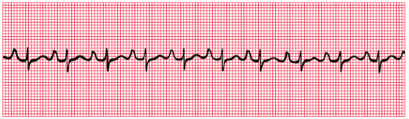 |
| Broad (>120 ms) AND bifid | left atrial hypertrophy (think mitral stenosis if there is NO LVH); or p mitrale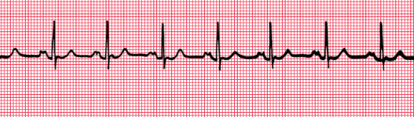 |
Abnormalities in QRS Complex
| Feature | Remarks |
|---|---|
| Deep (>1 mm), wide (>2 mm) Q waves | Myocardial infarction; Q waves that are less than 1 mm across and less than 2 mm deep are due to septal depolarization; and are normal. |
| Broad QRS complex >120ms (3 small squares) | Abnormal intraventricular conduction: it is seen in bundle branch block, in complexes originating in the ventricular muscle, and in Wolff–Parkinson–White syndrome. |
| Upright QRS in V1 with deep S; | Right ventricular hypertrophy, if associated with inverted T waves in lateral leads |
| Tall QRS ≥ 25 mm in V5 - V6 | left ventricular hypertrophy |
| Small QRS | Check the calibration of the ECG recorder. If this is correct, possible explanations of small QRS complexes are obesity, emphysema and pericardial effusion. |
- More on Q Waves
- Small (septal) ‘Q’ waves in the left ventricular leads result from depolarization of the septum from left to right
- These features often disappear if the ECG is repeated with the subject taking and holding in a deep breath.
- Can be normal even when associated with inverted T waves
- Deep and wide Q wave indicate MI, and the leads in which the Q wave appears give some indication of the part of the heart that has been damaged.
- The ventricles are depolarized from inside outwards
- If a myocardial infarction causes complete death of muscle from the inside surface to the outside surface of the heart, an electrical ‘window’ is created, and an electrode looking at the heart over that window will record a cavity potential – that is, a Q wave.
- The presence of a Q wave does not give any indication of the age of an infarction, because once a Q wave has developed it is usually permanent.
- For acute infarction, the Q wave is associated with ST segment and T wave changes; for old infarcts these are NOT seen.
Abnormalities in ST Segment
- Compare the ST segment with the part between T wave and the next P wave
| Feature | Remarks |
|---|---|
| ST segment elevation | Acute myocardial infarction due to either a recent MI or pericarditis; The leads in which the elevation occurs indicate the part of the heart that is damaged. In STEMI the damage is full thickness as opposed to NSTEMI. Pericarditis is usually a global affair, and causes ST elevation in most leads. |
| ST segment depression | Horizontal depression of the ST segment, associated with an upright T wave, is usually a sign of ischaemia as opposed to infarction. When the ECG at rest is normal, ST segment depression may appear during exercise, particularly when effort induces angina |
| Downward-sloping ST segment | Usually due to treatment with digoxin |
Abnormalities in T Wave
| Feature | Remarks |
|---|---|
| T wave inversion | normal when in leads III, VR, V1, and maybe V2 Otherwise, associated with bundle branch block (when occurring along with wide QRS complex, does not mean ischaemia), ischaemia, and ventricular hypertrophy. digoxin; Leads adjacent to those showing inverted T waves sometimes show biphasic T waves; which are initially upright and then inverted T wave inversion following MI is also often permanent |
| T wave flattening or peaking with an unusually long or short QT interval | electrolyte abnormalities |
- Non-specific changes in T - myocardial ischemia
U waves
- May be seen in normal people
- May also mean hypokalaemia when flat U waves follow flat T waves with a prolonged QT interval.
- Causes of prominent U: >1-2mm or 25% of the height of the T wave.
- Prominent U waves most commonly found with:
- Bradycardia
- Severe hypokalaemia.
- Prominent U waves may be present with:
- Hypocalcaemia
- Hypomagnesaemia
- Hypothermia
- Raised intracranial pressure
- Left ventricular hypertrophy
- Hypertrophic cardiomyopathy
- Drugs associated with prominent U waves:
- Digoxin
- Phenothiazines (thioridazine)
- Class Ia antiarrhythmics (quinidine, procainamide)
- Class III antiarrhythmics (sotalol, amiodarone)
Disease Patterns to Note¶
- Tachyarrhythmias
- Automaticity
- A normal property of cardiac placement,
- Abnormal automaticity may occur in some locations in the heart
- Can occur in atria, AV junction or reversible
- <10% of all abnormal tachyarrhythmia
- Causes of Automaticity
- Acute cardiac ischemia / infarction
- Hypoxia
- Hypokalemia, hypomagnesemia, acid-base disorders
- High sympathetic tone
- Use of sympathomimetic agent
- Reentry tachyarrhythmias
- Most common mechanism for tachyarrhythmias
- Pre-requisites
- Re-entrant electrical circuit
- One of the pathways has substantially longer refractory period
- The pathway with shorter refractory period must conduct electrical impulses more slowly than the other pathway
- Usually triggered by a premature beat
- May lead to
- SVT
- Ventricular reentrant circuits
- Triggered activity
- Possesses features similar to both automaticity and re-entry
- Like automaticity, new action potentials can be generated by leakage of positive ions into cell
- Unlike automaticity however, triggered by activity is not always spontaneous (and therefore not truly automatic)
- Like re-entry, triggered activity can be provoked by premature beats
- Most likely the mechanism for digitalis-toxic supra ventricular and ventricular arrhythmias
- Mechanism of Torsades De Pointes - polymorphic ventricular tachycardia
| Condition | ECG Features |
|---|---|
| Right atrial hypertrophy | Tall P waves |
| Left atrial hypertrophy | Bifid or abnormal looking P waves |
| ASD | Right bundle branch block with a QRS complex duration greater than 120 ms is sometimes seen in healthy subjects, but should be taken as a warning of things like an atrial septal defect. |
| Right ventricular hypertrophy | Right axis deviation Peaked P wave, especially in lead II Upright QRS in V1 (i.e. tall R) and deep S Shift of transition point to the left (R=S in V5 / 6) Inversion of T waves in V1 spreading to V2 (sometimes V3, V4) |
| Pulmonary embolism | Commonly sinus tachycardia with no other changes All right ventricular hypertrophy signs A Q wave in lead III resembling inferior infarction Plus right bundle branch block (some times) |
| Left ventricular hypertrophy | Tall R > 25 mm in V5, V6 Deep S in V1 or V2 Inverted T waves in I, VL, V5, V6, and sometimes V4 Maybe left axis deviation Left ventricular hypertrophy can only be diagnosed with confidence when tall QRS complexes are associated with inverted T waves in the lateral leads |
| LV anterior wall infarction | Wide and deep Q wave in V2 - V4 or V5 |
| Anterior and lateral surfaces infarction | Wide and deep Q wave in V3 and V4 PLUS the lateral leads I, VL, V5 and V6 |
| Inferior surface infarction | Wide and deep Q wave in III or VF May be associated with AV node problems; always look for them! |
| Posterior surface infarction | Dominant R in V1 (upright QRS in V1 as though there is RVH since the depolarization of the right ventricle is less overshadowed by the left; other changes in RVH are not seen) Flattened T waves in leads I and VL (lateral heart) Do right chest leads when suspected |
| NSTEMI | Biphasic or inverted T waves |
| Digoxin | Atrial fibrillation Narrow QRS complexes Downward-sloping ST segments (reversed tick) Inverted T waves |
| Hypercalcemia | Shortened QT interval |
| Hypocalcemia | prolongation of the QT interval |
| Hyperkalemia / Hypermagnesemia | A high potassium level causes peaked T waves with the disappearance of the ST segment. The QRS complex may be widened. |
| Hypokalaemia / Hypomagnesemia | T wave flattening and the appearance of a hump on the end of the T wave called a ‘U’ wave. |
| Wellens syndrome | A pattern of electrocardiographic (ECG) changes, particularly deeply inverted or biphasic T waves in leads V2-V3, that is highly specific for critical, proximal stenosis of the left anterior descending (LAD) coronary artery. It is alternatively known as anterior, descending, T-wave syndrome. |
Examples¶
Normal and Normal Variants¶
Case 1

- Diagnosis: Normal
- My diagnosis: Left atrial hypertrophy without signs of LVH; suggestive of mitral stenosis - no the P wave is not broad but just appears to be bifid, he doesn't see this as being abnormal
- ECG Features
- regular, 90 - 100 bpm, normal axis
- PR interval is 120 ms, QRS is of normal wide, QT interval is normal
Case: normal ECG

Sinus / Atrial Arrhythmias¶
Case: Atrial Tachycardia

- Abnormal P wave is the key indicator of this being atrial not sinus rhythm.
Case: Sinus bradycardia with t-wave inversion
- T-wave inversion HTN, LVH,

Case: Premature Atrial Complex

- People presents with the feeling of a missed beat, which is the beat that is due to the refractory period. The next beat is the strong beat due to increased stroke volume.
- Mechanism
- Enhanced automaticity: electrolytes abnormality or acute ischaemic
- Triggered activity: hypokalemia, ischaemia, infarct, excess calcium, drug toxicity e.g. digoxin
- Re-entry: healed MI
- Clinical presentation
- Usually asymptomatic, incidental finding
- "Skipped beats" or "occasional heavy heart beat"
- Common causes
- Normal subject
- Drug / substance induced - caffeine
- Mitral valve prolapse, hypertension, left ventricular hypertrophy
- Hyperthyroidism
- Ischaemic heart disease
- Cardiomyopathy / heart failure
- Treatment
- Usually no treatment required. Avoid triggers
Case 2

- Diagnosis: Sinus arrhythmia
- (My guess) septal infarct - unlikely because in thin chested individual, we can have tall T waves in some leads
- ECG Features
- Irregular rhythm likely
- Tall T waves: asymmetrically T waves (in hyperkalemia, the tall T waves are symmetrical); for asymmetrical T waves, consider MI
- Bifid P wave in lead II (but not too broad)
- J point (the place where S ends and T starts) is elevated in V2 and V3, this can be reflected in V1 as a little notch.
- Ddx: multifocal atrial arrhythmia: p wave morphology different in a single lead
- How to treat
- Sinus arrhythmia is normal in young persons
- In older persons: look for COPD or some other condition
Case: Sick sinus syndrome

- Diagnosis: sick sinus syndrome / SA exit block
- ECG Features
- Irregular rhythm; with intermittent bradycardia (40 - 75 bpm), failure to generate P waves suddenly and occasionally
- Normal PR, QRS, QT intervals
- Associated symptoms
- Palpitation
- Skipped beat
- Fainting spells
- How to treat: Pacemaker
Case 4

- Diagnosis: atrial bigeminy
- NOT! 2:1 block
- ECG Features
- Polymorphic P waves in the leads
- Ectopic atrial beats
- The ectopic atrial beat can be superimposed on the preceding T wave
- Associated symptoms
- Palpitation
- Missed beat
- Faintness or dizziness.
- a sensation of the heart stopping for a moment.
- a racing heartbeat.
- a fluttering sensation in the chest.
- Factors causing the condition
- These premature heartbeats are associated with lung diseases, especially if high blood pressure is present in the arteries that go between the heart and lungs.
- Or due to coronary artery disease
- Stimulants (such as coffee and tea, alcohol or some types of cold, allergy or asthma remedies, cocaine) will sometimes set off the extra beat.
- Atrial ectopic beats happen more often in older people than younger ones.
- How to treat
- Identifying what triggers the extra beat can be helpful. By avoiding the trigger, it may be possible to eliminate the extra beat.
- If this is not possible and frequent, intolerable palpitations are present, drugs to control irregular heart rhythms are helpful e.g. beta-blockers, CCB to slow down the rate of ectopics.
- If the extra heartbeat happens often, it can — but does not always — set off atrial fibrillation.
Case 6

-
Diagnosis: atrial fibrillation
-
ECG Features
-
no p wave, narrow QRS, wavy baseline
-
Significant mobility and mortality; most common in elderly
-
Pathiophysiology
-
Atrial fibrosis and loss of atrial mass
- Dilation of atria from other cardiac disease
-
Mechanism of arrhythmia
- Increased automaticity
- Multiple re-entrant wavelets
-

-
Factors causing the condition

-
Predisposing factors
- Persisting factors
- Hyperthyroidism
- COPD
- Mitral valve conditions
- Age
-
Non cardiac associations:
-
Types of AF: may convert between each type
| Type | Description |
|---|---|
| First detected |
-
Once permanent usually don't move back
-

-
Consequences
-
Loss of synchronous atrial mechanical activity
- Irregular ventricular response
- Rapid heart rate
-

-

-
Further investigation required
-
How to treat
-
IV amiodarone 150 - 300 mg IV over 30 minutes
- If no HF, can do beta-blocker
- If WPW, use procainamide instead
Case : Fast Afib

Case: Atrial Flutter
 **
**


- Atypical flutter
- No negative saw-tooth appearance

- Diagnosis: atrial flutter with 4:1 block
- ECG Features
- Saw tooth appearance of P waves; atrial rate just below 300 bpm
- Narrow QRS; RR rate is around 70 - 80 bpm
- Associated symptoms: palpitation, syncope
- How to treat
- As in AFib
Junctional and Supraventricular Arrhythmias¶
Case SVT

Case 5

- Diagnosis: Junctional tachycardia
- Ddx: Atrial flutter with rapid ventricular response with 2:1 conduction
- Valsava manoeuvres to differentiate the two
- ECG Features
- Regular rhythm with rate of 150 bpm
- Normal cardiac axis
- No p wave, narrow QRS with slight delta wave
- Factors causing the condition:
- AMI, myocarditis, digoxin, and catecholamine toxicity
- AV nodal problems
- Thyrotoxicosis
- Theophylline
- Caffeine intake / alcohol
- How to treat
- Vagal manoeuvres
- Give adenosine / CCB
- If unstable,
Case 8

- Diagnosis: first degree heart block
- ECG Features
- Regular rhythm with 75 bpm, normal cardiac axis
- Prolonged PR interval, normal QRS and QT
- Normal P, QRS, T wave morphologies, no U or delta waves
- Associated symptoms
- Asymptomatic
Case 9

- Diagnosis: Mobitz Type 1 AV Block
- ECG Features
- PR intervals elongate followed by dropped beats
- Associated symptoms
- Factors causing the condition
- How to treat
Case 10

- Diagnosis: Mobitz type II AV Block
- ECG Features
- PR interval is prolonged and fixed
- Occasional non-conduction of P wave
- How to treat
- Transcutaneous pacing is very painful due to higher energy
- Atropine then dopamine drip start at 5 mcg/kg/min increase in stepwise until we achieve desired heart rate;
Case: Complete heart block

- Diagnosis: Third degree heart block
- ECG Features
- Bradycardia irregular 45 beats/min
- T wave inversion in II, III aVF, V4-6
- AV dissociation
- Large S in V2 and large R in V5
- Factors causing the condition
- Inferior MI
- Right coronary artery supply AV node is 90% of patients, 10% left circumflex
- LVH
- Presentation: chest pain, palpitation, diaphoresis, syncope / dizzy, HoTN
- How to treat:
- Definitive: pacemaker

Ventricular Arrhythmias¶

Case: RBBB

- ST depression and Slurred S wave are part of RBBB

Case: ventricular bigeminy

- Every other beat is abnormal
Case: ventricular couplet

- Triplet
Case 12

- Diagnosis: Ventricular Escape
- ECG Features
- no p-wave, wide QRS
- How to treat
**Case: VT**s
Regular broad complex tachycardia


- Diagnosis: ventricular tachycardia
- ECG Features
- Monomorphic broadened QRS
- How to treat: amiodarone
- There is a idiopathic type of VT that doesn't has as broad a QRS complex
Case 19

- Diagnosis: torsade de pointes
- How to treat: MgSO4
Case 13

- Diagnosis: Ventricular asystole
- ECG Features
- No QRS complex
Infarcts¶
Case: Is this MI or LBBB

-
Use sgarbossa criteria if patient has chest pain
-
ST-segment elevation of ≥1 mm concordant with QRS complex
- ST-segment elevation of ≥5 mm discordant with QRS complex
- ST-segment depression of at least 1 mm in V2 and V3

Case 14

- Diagnosis: Extensive Anterior STEMI (Left descending artery)
- ECG Features
- Prominent tall asymmetrical T waves with ST elevation in V1 - 5
- Associated symptoms
- Chest pain, SOB, diaphoresis, syncope
- How to treat
- For patient with breathlessness, place patient at 45 degrees
Case: Fronto-lateral MI

- Poor R progression
Case 15

- Diagnosis: Inferior STEMI
- ECG Features
- ST elevation in II, II, aVF
- Reciprocal degression in 1 - 4, I aVR and aVL
- Possible complications of inferior STEMI
- Do posterior leads to inferior STEMI:
- Check for AV node
- Right ventricular involvement by doing right leads
Case 16

- Diagnosis: inferior-fronto STEMI with right ventricular infarct
- Worry dual vessel disease: dominant right coronary is possible
- PR interval is prolonged
- How to treat
- Worry low BP
- Low saturation because of poor perfusion to the lungs
- JVP for RA failure signs: give fluid challenges
- Fluid challenge 200 - 300 ml and watch BP; if this brings up the BP it's good.
- If not give vasopressor gradually to try to bring up the blood pressure; but note that if we give sympathomimetics it will affect the heart rate.
- If they require coronary angiogram, get consent for PCI
Case: Inferior with posterior AMI

- Do Right sided leads
- Right ventricular infarct, becomes preload dependent, worry GTN
- Be careful about fluids
- Interior MI is associated with bradycardia

Case 17

- Diagnosis: Inferior STEMI with, lateral, posterior extension, with AV block
- Very dominant right coronary, that extends to the apex of the heart
- ECG Features
- II, III, aVF elevated ST segment
- V4 - 6 ST elevation
- Reciprocal changes in aVL
- V2 has a significant R, depressed ST and upright T: indicating a posterior infarct - the inverted mirror image sign
- Prolonged PR interval
- Investigation
- Posterior lead
- Right view
- How to treat
Case: de winters
Key diagnostic features include ST depression and peaked T waves in the precordial leads. The de Winter pattern is seen in ~2% of acute LAD occlusions and is under-recognised by clinicians

- Cat lab activation is indicated in patients with de Winter and Cath lab
Outside of the Heart¶
Case 20

- Diagnosis: Pulmonary Embolism
- Ddx: Right ventricular hypertrophy
- ECG Features
- Sinus tachycardia
- Right deviation
- T wave inversions: I, II, III, aVF, 2 - 5
- RBBB
- Signs and symptoms on PE
- Leg swelling for DVT: calf
- pelvic veins, IVC
- Recent surgery
- Acute right heart strain signs: elevated JVP, loud P2,
- CT pulmonary angiography looking for filling defect in pulmonary vasculature
- How to treat
Case 21

- Diagnosis: Hyperkalemia
- ECG Features
- Main
- Minor
- Associated symptoms
- Factors causing the condition
- Further investigation required
- How to treat
Case 22

- Diagnosis: hypokalaemia (?)
- ECG Features
- Main
- Prominent U wave
- Minor
- Tall R deep S in V1 suggestive of RVH
- Tall R in V4 V5, with deep S in V2 and V3, suggestive of LVH
- Tall P wave in II ? RAH
- Bifid P wave in V4 ? LAH